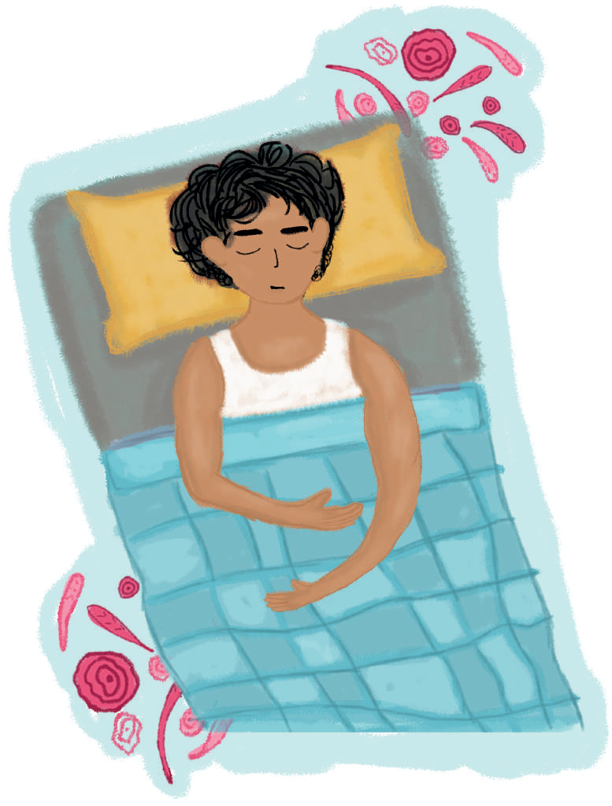
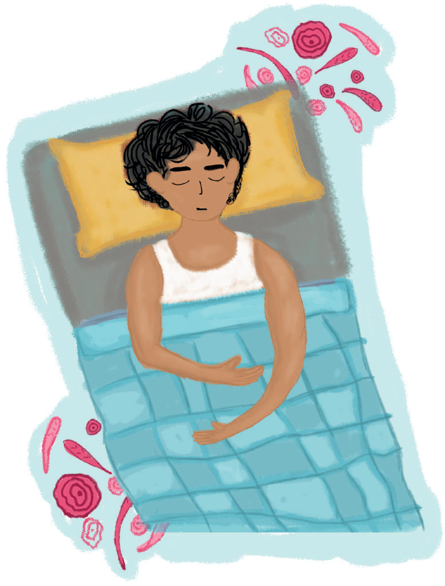

No abusar de la siesta:
Es recomendable dedicar tiempo para reponerse durante el día, una siesta puede resultar beneficiosa.
Si ésta se prolonga puede alterar el sueño nocturno.
Se recomiendan siestas cortas, de unos 20 o 30 minutos.
Es recomendable dedicar tiempo para reponerse durante el día, una siesta puede resultar beneficiosa.
Si ésta se prolonga puede alterar el sueño nocturno.
Se recomiendan siestas cortas, de unos 20 o 30 minutos.
